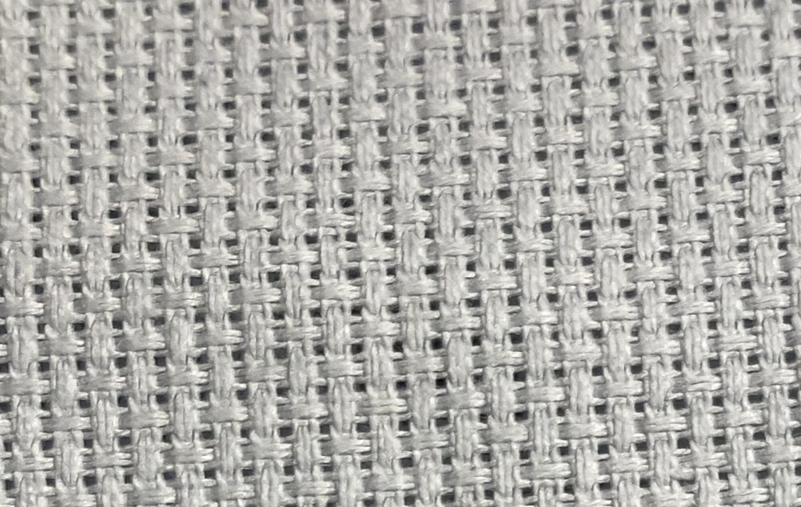
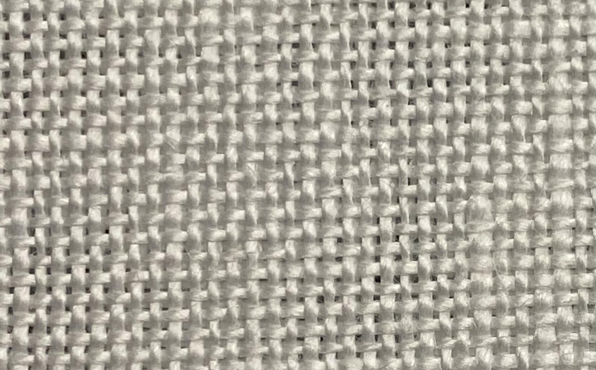
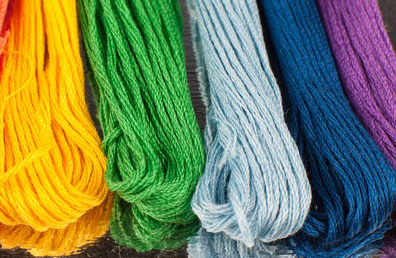
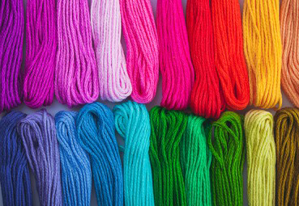
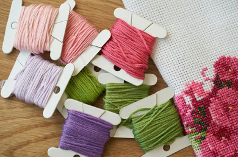
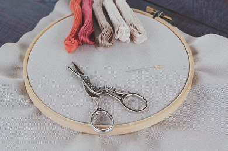
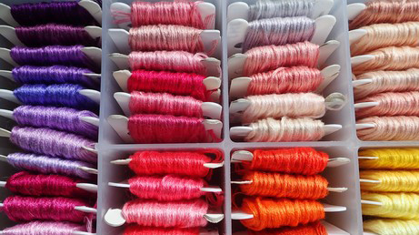
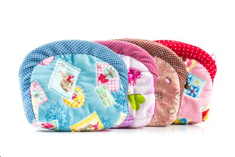

Aida |
Linen |
|---|---|
|

Most commonly used by beginners |

Used by advanced stitchers |
Cotton |
Satin |
|---|---|
|

The floss thats good for everyone |

Lets talk about when to use satin floss |
Bobbins |
Scissors |
|---|---|
|

Store and organize your floss in projects |

The best and worst scissors and why |
Boxes |
Covers |
|---|---|
|

How to keep your hoard organized |

How to protect your active projects |